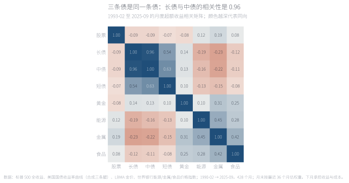
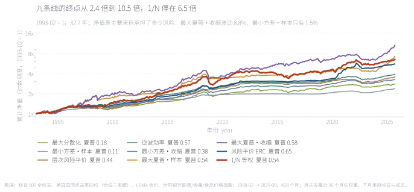
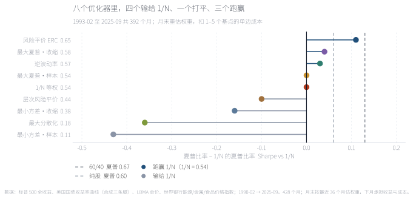
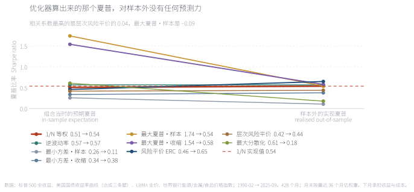
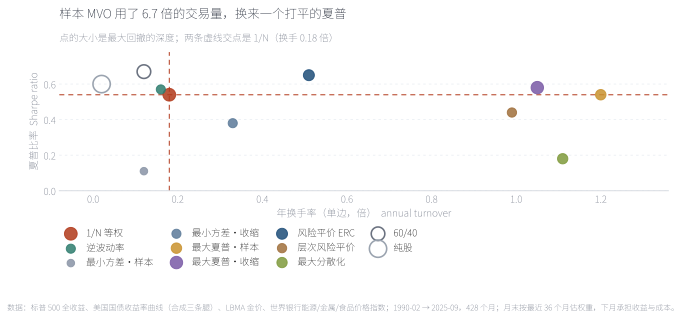
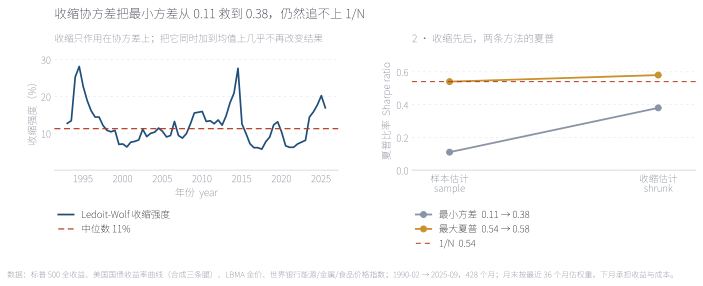
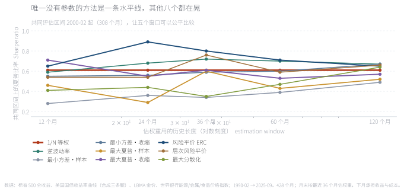
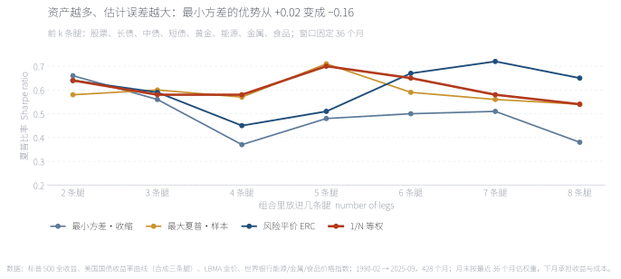
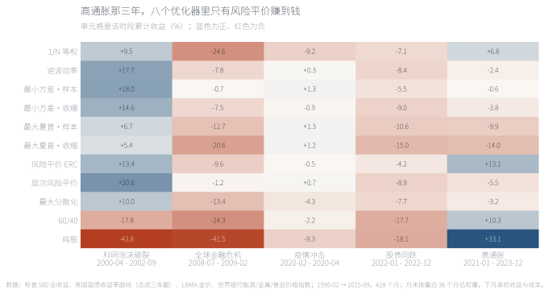
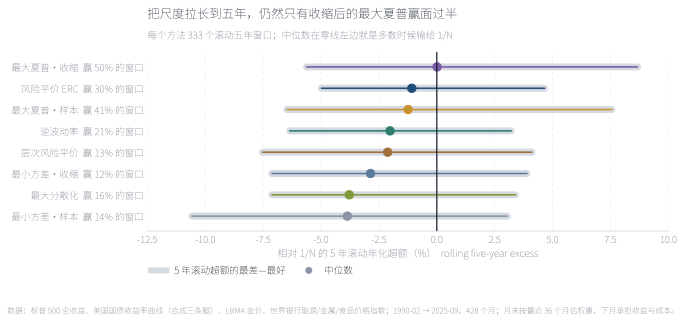

有一句被引用了十几年的反直觉结论：别解那个最优化问题，把钱平均分给每一条腿。这句话有硬出处——2009 年 DeMiguel、Garlappi 与 Uppal 用十四个模型和七个数据集得出它。本文把它放到一个更苛刻的考场里：8 条腿、9 个组合、392 个月、同一套成本假设。结果是：1/N 的年化 5.88%、夏普 0.54，八个优化器里四个明确输、一个打平、三个赢；而样本内预期夏普 1.74 的那个组合，实际拿到的夏普是 0.54——和什么都不算的等权一模一样。换估计窗口、换资产数，都不改变这个排序。 There is a counter-intuitive claim that has been quoted for fifteen years: don't solve the optimisation problem, split the money evenly. It has a hard citation — DeMiguel, Garlappi and Uppal, 2009, fourteen models across seven datasets. This note puts it in a harsher exam: eight legs, nine portfolios, 392 months, one set of cost assumptions. The result: 1/N earns 5.88% a year with a Sharpe of 0.54, while four of the eight optimisers clearly lose to it, one ties and three win. And the portfolio whose in-sample expected Sharpe was 1.74 delivered 0.54 — exactly the same as the equal-weighted one that estimates nothing. Change the estimation window, change the number of assets, and the ordering does not move.
摘要本文把 1/N 等权与八种组合优化方法放在同一份美国数据上重跑一遍，样本为 1990-02 至 2025-09 共 428 个月，其中样本外 392 个月（1993-02 起，32.7 年）。八条腿是股票、长债、中债、短债、黄金、能源、金属、食品；所有方法每年 1 月用最近 36 个月数据重估一次权重，成交按 1–5 个基点的单边成本扣除。结论分三层：排序——1/N 的夏普 0.54 排第四，四个优化器明确低于它；机制——低效来自估计误差，尤其是均值：样本内预期夏普最高的组合实现夏普只与 1/N 持平，收缩估计能把最小方差从 0.11 修到 0.38，但修不到 0.54 以上；条件——优化器在单条腿崩塌的时段明显有用，在全样本和滚动五年尺度上则多数时候输。边界全部资产为美国资产、全部策略为多头不做杠杆、债券由收益率曲线合成、黄金为现货裸价、商品为价格指数不含展期收益；含交易成本，不含税费与汇率。
AbstractThis note re-runs 1/N against eight portfolio-optimisation methods on one US dataset: 428 months from February 1990 to September 2025, of which 392 months are out of sample (from February 1993, 32.7 years). The eight legs are equities, long bonds, intermediate bonds, short bonds, gold, energy, metals and food; every method re-solves its weights each January from the trailing 36 months, and trading is charged at one to five basis points per leg. The findings have three layers. Ordering: 1/N's 0.54 Sharpe ranks fourth, with four optimisers clearly below it. Mechanism: the shortfall comes from estimation error, above all in the mean — the portfolio with the highest in-sample expected Sharpe merely ties 1/N out of sample, and shrinkage lifts minimum variance from 0.11 to 0.38 but no further. Condition: optimisers clearly pay when a single leg collapses, and lose most of the time over the full sample and in rolling five-year blocks. Limits: US assets only, long-only and unlevered throughout, bonds synthesised from the yield curve, gold as spot without carry, commodities as price indices without roll yield; costs included, taxes and FX excluded.
关键词 1/N 等权 · 均值方差最优化 · 估计误差 · 收缩估计 · 最小方差 · 换手成本Keywords 1/N equal weight · mean-variance optimisation · estimation error · shrinkage · minimum variance · turnover
组合管理的教科书都从同一个流程开始：估一份预期收益，估一份协方差矩阵，解一个最优化问题，读出权重。"1/N 打败最优化"说的是把这个流程整个绕开——把钱平摊给每一条腿。这不是民间智慧，它有一个很硬的出处。
Portfolio textbooks all begin the same way: estimate expected returns, estimate a covariance matrix, solve an optimisation problem, read off the weights. "1/N beats optimisation" says to skip the whole procedure and split the money evenly instead. This is not folk wisdom; it has a hard citation.
2009 年，DeMiguel、Garlappi 与 Uppal 在《Review of Financial Studies》上发表了《Optimal Versus Naive Diversification: How Inefficient Is the 1/N Portfolio Strategy?》。他们把当时常用的十四个最优化模型——样本均值方差、最小方差、带约束的版本、各种贝叶斯收缩——放在七个公开数据集上，与最简单的 1/N 等权逐一对比。结论一句话：把估计误差和换手成本算进去之后，没有哪个模型能稳定地赢过等权。
In 2009 DeMiguel, Garlappi and Uppal published "Optimal Versus Naive Diversification: How Inefficient Is the 1/N Portfolio Strategy?" in the Review of Financial Studies. They lined up fourteen optimisation models of the day — sample mean-variance, minimum variance, constrained variants, assorted Bayesian shrinkages — against plain 1/N across seven public datasets. The finding fits in one sentence: once estimation error and turnover costs are counted, none of the models reliably beats equal weighting.
原因不在"最优化"这三个字，在参数。均值方差最优化要求你把预期收益和协方差当成已知真值代入，而现实中两者都只能估。Michaud 在 1989 年就把这件事说破了：优化器会把估计误差当成信号来放大，它本质上是一台"估计误差最大化器"。1/N 之所以难被击败，恰恰因为它不估计任何东西——没有参数可以估错，也就没有误差可以放大。
The problem is not the word "optimisation", it is the parameters. Mean-variance optimisation asks you to plug in expected returns and a covariance matrix as if they were known; in practice both are estimates. Michaud said as much in 1989: the optimiser treats estimation error as signal and amplifies it — in effect, an error maximiser. What makes 1/N hard to beat is precisely that it estimates nothing: no parameter can be got wrong, so no error can be amplified.
但这句结论经常被引用成一个更大的判断——"优化没有用"。那不是原论文的意思。它测的是"用历史样本估参数"这一种做法，而 2009 年之后的二十年里，这块领域出现了收缩估计、贝叶斯先验、因子模型、稳健优化这一整批工具。所以本文要问的不是"优化有没有用"，而是三个更具体的问题。
But the line is often quoted as a broader verdict — "optimisation doesn't work". That is not what the paper says. It tested one practice: estimating parameters from a historical window. The twenty years since have produced shrinkage estimators, Bayesian priors, factor models and robust optimisation. So the question here is not whether optimisation works, but three narrower ones.

在回答那三个问题之前，先看这张矩阵。长债与中债的相关系数是 0.96，中债与短债 0.63——三条"不同"的债券其实是同一条腿的三个刻度。商品内部同样挤在一起：能源与金属 0.45、金属与食品 0.42、黄金与金属 0.31。真正接近零相关的只有两组：股票对债券（−0.07 至 −0.09）与股票对黄金（−0.08）。这正是最优化最难做的地方：它按八个维度求解，而这份矩阵里可能只有四到五个自由度；对一个接近奇异的协方差矩阵求逆，等于把噪声放大成权重。
Before the three questions, look at this matrix. Long bonds and intermediate bonds correlate at 0.96, intermediate and short at 0.63 — three supposedly different bond legs are three points on one line. Commodities bunch up too: energy and metals 0.45, metals and food 0.42, gold and metals 0.31. Only two pairs sit near zero: equities against bonds (−0.07 to −0.09) and equities against gold (−0.08). This is where optimisation works hardest against itself: it solves in eight dimensions when the matrix may have only four or five degrees of freedom, and inverting a near-singular matrix turns noise into weights.
来源：本文回测；1993-02 至 2025-09 共 392 个月的月度收益，皮尔逊相关系数。Source: author's backtest; 392 monthly observations from February 1993 to September 2025, Pearson correlations.
三问依次是：（一）在 8 条腿、32.7 年的样本上，"1/N 难被击败"还成立吗？（二）如果成立，是估计误差把优化器吃掉了，还是别的原因？（三）有没有哪一种优化器真的能稳定赢——以及在什么条件下赢。
The three questions, in order. One: on eight legs and thirty-two years, does "1/N is hard to beat" still hold? Two: if so, is the culprit estimation error, or something else? Three: is there any optimiser that wins reliably — and if so, when?
样本刻意选宽：8 条腿——股票、长债（30 年期）、中债（10 年期）、短债（2 年期）、黄金、能源、金属、食品。本文的数据来自 Yahoo Finance 标普 500 全收益、美国财政部的国债收益率曲线（合成三条债券腿）、LBMA 伦敦金价，以及世界银行 Pink Sheet 的能源、金属与食品价格指数。这比《风险平价实测》的四条腿宽一倍，而且不是为了好看：论战本身研究的正是"资产数量上去之后 1/N 还成不成立"，只有把资产数拉到 8，问题才问得完整。
The universe is deliberately wide: eight legs — equities, 30-year bonds, 10-year bonds, 2-year bonds, gold, energy, metals and food. The data come from Yahoo Finance (S&P 500 total return), the US Treasury yield curve (synthesising the three bond legs), the LBMA London gold fix and the World Bank Pink Sheet for energy, metals and food. That is twice the four legs used in the risk-parity note, and not for show: the debate itself is about whether 1/N survives as the asset count rises, so the question is only complete at eight.
数据从 1990-02 到 2025-09 共 428 个月，前 36 个月用来做第一次估计，所以样本外从 1993-02 开始，共 392 个月（32.7 年）。所有方法的规则完全一样：每年 1 月用最近 36 个月的月度收益估一次参数、解一次权重，年内随价格漂移不再调整；交易按每条腿 1–5 个基点的单边成本扣掉。换句话说，下文所有的排序都不是"某个方法参数没调好"，而是同一套规则下估出来的。
The data run from February 1990 to September 2025, 428 months, with the first 36 used for the initial estimate, so the out-of-sample record starts in February 1993 and runs 392 months, 32.7 years. Every method runs identical rules: each January the parameters are re-estimated from the trailing 36 monthly returns and weights are re-solved once, then left to drift for the rest of the year; trading is charged at one to five basis points per leg, one way. In other words, nothing below is the result of badly tuned parameters — it is all the same rules, estimated.
| 方法Method | 它要做什么What it does | 用到的估计量Estimated inputs |
|---|---|---|
| 1/N 等权1/N equal weight | 每条腿固定 1/8，永不改变One eighth per leg, never changed | 无None |
| 逆波动率Inverse volatility | 按波动率的倒数分配资金Weight by the inverse of volatility | 只估波动率Volatility only |
| 最小方差·样本Minimum variance, sample | 在权重非负、和为 1 的约束下最小化组合方差Minimise portfolio variance, long-only, weights summing to one | 样本协方差Sample covariance |
| 最小方差·收缩Minimum variance, Ledoit-Wolf | 同上，但协方差先向 μ·I 收缩As above, with the covariance shrunk toward μ·I | 收缩协方差Shrunk covariance |
| 最大夏普·样本Max Sharpe, sample | 最大化 (组合收益 − 现金) ÷ 组合波动Maximise (portfolio return − cash) ÷ portfolio volatility | 样本均值与协方差Sample mean and covariance |
| 最大夏普·收缩Max Sharpe, James-Stein | 同上，均值与协方差都先收缩As above, with both mean and covariance shrunk | 收缩均值与协方差Shrunk mean and covariance |
| 风险平价·ERCRisk parity, ERC | 解到每条腿对组合方差的贡献相等Solve until every leg contributes equally to portfolio variance | 样本协方差（不求逆）Sample covariance (no inverse) |
| 层次风险平价Hierarchical risk parity | 按相关性做层次聚类，再自上而下分风险Cluster by correlation, then divide risk top-down | 样本协方差（不求逆）Sample covariance (no inverse) |
| 最大分散化Max diversification | 最大化分散化比率（加权波动 ÷ 组合波动）Maximise the diversification ratio (weighted vol ÷ portfolio vol) | 样本协方差Sample covariance |
| 60/40（参照）60/40 (reference) | 股票 60% + 中债 40%60% equities + 40% 10-year bonds | 无None |
| 纯股（参照）All equity (reference) | 100% 股票100% equities | 无None |
| 资产Asset | 年化 %Return % | 波动 %Vol % | 夏普Sharpe | 最大回撤 %Max DD % | 最差 12 月 %Worst 12m % | 最好 12 月 %Best 12m % |
|---|---|---|---|---|---|---|
| 股票Equities | 10.80 | 14.8 | 0.60 | -50.9 | -43.3 | 56.4 |
| 长债Long bonds | 4.88 | 13.4 | 0.24 | -46.8 | -34.5 | 43.5 |
| 中债10-year bonds | 4.16 | 7.1 | 0.26 | -25.4 | -20.6 | 26.1 |
| 短债2-year bonds | 2.86 | 1.6 | 0.22 | -6.3 | -6.2 | 12.2 |
| 黄金Gold | 7.66 | 12.3 | 0.46 | -39.3 | -27.5 | 60.0 |
| 能源Energy | 4.01 | 26.7 | 0.19 | -81.8 | -63.4 | 155.4 |
| 金属Metals | 3.63 | 16.4 | 0.15 | -59.9 | -59.0 | 91.8 |
| 食品Food | 2.15 | 10.4 | 0.02 | -39.1 | -29.6 | 69.1 |
这张表也解释了 1/N 的起点有多低。八条腿里年化最高的是股票 10.80%，最低的是食品 2.15%、短债 2.86%；等权拿到的是它们的平均，同时把股票那条腿 14.8% 的波动摊薄掉——它换来 6.4% 的组合波动，代价是年化只有 5.88%。1/N 从来不是"最优"，它只是"不需要估参数"，而这两件事在长期数据里经常是同一件事。
This table also shows how low 1/N's starting point is. Of the eight legs, equities earn the most at 10.80% a year and food the least at 2.15% (short bonds 2.86%); equal weighting gets their average while diluting equities' 14.8% volatility down to a 6.4% portfolio volatility, in exchange for 5.88% a year. 1/N was never "optimal"; it simply needs no parameters estimated — and over long samples those two things are often the same thing.
先把结果整张摊开。九条线都从 1993-02 的 1 元出发，终点从 2.36 元（最小方差·样本）到 10.47 元（最大夏普·收缩）；两条参照线落在 60/40 的 14.24 元与纯股的 28.48 元上。
Start by laying the whole result out. All nine lines begin at 1 on February 1993 and end between 2.36 (sample minimum variance) and 10.47 (shrunk max-Sharpe); the two reference lines land at 14.24 for the 60/40 and 28.48 for all-equities.

对数刻度下，终点的高低主要是承担了多少风险的结果，不是算得准不准：终点最高的最大夏普·收缩波动 8.8%，最低的最小方差·样本只有 1.5%。真正值得看的是两条参考线和群的关系——所有九条优化线都在 60/40 的下方（14.24 元），而 60/40 只用两条腿。1/N 那条线（6.47 元）在中间偏下，形状比上下两条都平。
On a log scale, where a line ends is mostly a function of how much risk it took, not how well it estimated: the top line, shrunk max-Sharpe, ran 8.8% volatility while the bottom one, sample minimum variance, ran 1.5%. What matters is where the nine sit relative to the two references — every optimisation line finishes below the 60/40 at 14.24, and the 60/40 only holds two legs. The 1/N line (6.47) sits just below the middle and is flatter than everything around it.
来源：本文回测；1993-02 至 2025-09 共 392 个月，每年 1 月重解权重、年内漂移，已扣 1–5 个基点的单边成本。Source: author's backtest; 392 months from February 1993 to September 2025, weights re-solved each January and left to drift, net of one to five basis points per leg.
真正的看点在排序，不在高度。按夏普排，1/N 的 0.54 排在九个组合的第四位：三个优化器在它之上（风险平价 ERC 0.65、最大夏普·收缩 0.58、逆波动率 0.57），一个与它几乎完全相同（最大夏普·样本 0.54），四个在它之下（层次风险平价 0.44、最小方差·收缩 0.38、最大分散化 0.18、最小方差·样本 0.11）。而 1/N 做到这件事，没有估任何一个参数。
The story is the ordering, not the height. Ranked by Sharpe, 1/N's 0.54 comes fourth of nine: three optimisers sit above it (risk-parity ERC 0.65, shrunk max-Sharpe 0.58, inverse volatility 0.57), one matches it almost exactly (sample max-Sharpe 0.54) and four sit below (hierarchical risk parity 0.44, shrunk minimum variance 0.38, maximum diversification 0.18, sample minimum variance 0.11). And 1/N did it without estimating a single parameter.
| 方法Method | 年化 %Return % | 波动 %Vol % | 夏普Sharpe | 最大回撤 %Max DD % | 换手Turnover | 1 元终值$1 grows to |
|---|---|---|---|---|---|---|
| 1/N 等权1/N equal weight | 5.88 | 6.4 | 0.54 | -25.1 | 0.18 | 6.47× |
| 逆波动率Inverse volatility | 4.24 | 3.0 | 0.57 | -10.5 | 0.16 | 3.88× |
| 最小方差·样本Min variance, sample | 2.67 | 1.5 | 0.11 | -5.8 | 0.12 | 2.36× |
| 最小方差·收缩Min variance, Ledoit-Wolf | 3.67 | 3.1 | 0.38 | -10.5 | 0.33 | 3.25× |
| 最大夏普·样本Max Sharpe, sample | 6.23 | 7.1 | 0.54 | -15.4 | 1.20 | 7.20× |
| 最大夏普·收缩Max Sharpe, James-Stein | 7.45 | 8.8 | 0.58 | -23.8 | 1.05 | 10.47× |
| 风险平价·ERCRisk parity, ERC | 5.39 | 4.5 | 0.65 | -17.4 | 0.51 | 5.56× |
| 层次风险平价Hierarchical RP | 3.96 | 3.3 | 0.44 | -11.1 | 0.99 | 3.56× |
| 最大分散化Max diversification | 3.18 | 4.0 | 0.18 | -14.8 | 1.11 | 2.78× |
| 60/4060/40 | 8.47 | 9.1 | 0.67 | -29.6 | 0.12 | 14.24× |
| 纯股All equity | 10.80 | 14.8 | 0.60 | -50.9 | 0.02 | 28.48× |
如果改用年化收益来排，结论更难堪：只有两个优化器超过 1/N 的 5.88%——最大夏普·收缩 7.45% 与最大夏普·样本 6.23%。而 7.45% 是用 8.8% 的波动换来的，比 1/N 的 6.4% 高三分之一；它之所以赢，是因为它承担了更多风险，而不是因为它算得更准。用风险调整后的口径，这场比试只剩一个赢家——风险平价 ERC，而它恰恰是最不依赖收益预测的那一个。
Rank on raw return instead and it gets uglier: only two optimisers beat 1/N's 5.88% — shrunk max-Sharpe at 7.45% and sample max-Sharpe at 6.23%. And that 7.45% was bought with 8.8% volatility, a third more than 1/N's 6.4%: it wins by taking more risk, not by estimating better. On a risk-adjusted basis exactly one optimiser wins, risk-parity ERC — the one that never uses a return forecast at all.
第一层回答了谁赢谁输，还没回答为什么。先把每个优化器放到同一把尺子上量一次：横轴是它相对 1/N 的夏普差，右边的点赢、左边的点输，1/N 自己钉在零点上。
The first layer settles who wins. It does not yet say why. Begin by measuring every optimiser against the same ruler: the horizontal axis is its Sharpe advantage over 1/N, points to the right win, points to the left lose, and 1/N is pinned at zero.

四个点在左边：最小方差·样本落后 0.43、最大分散化 0.36、最小方差·收缩 0.16、层次风险平价 0.10。三个在右边：风险平价 ERC 领先 0.11、最大夏普·收缩 0.04、逆波动率 0.03。一个压在零线上。把八条线上的差距加起来，赢的那一侧总共只多了 0.18，输的那一侧少了 1.05。这不是"优化器略逊一筹"，而是分布本身偏斜——赢的时候赢得很少，输的时候输得很多。
Four points sit on the left: sample minimum variance trails by 0.43, maximum diversification by 0.36, shrunk minimum variance by 0.16, hierarchical risk parity by 0.10. Three sit on the right: risk-parity ERC leads by 0.11, shrunk max-Sharpe by 0.04, inverse volatility by 0.03. One is pinned to zero. Add the eight gaps up and the winning side gains 0.18 in total while the losing side gives up 1.05. This is not a mild shortfall; the distribution is skewed — the wins are small and the losses are large.
来源：本文回测；1993-02 至 2025-09 共 392 个月，夏普＝(年化收益 − 年化现金) ÷ 年化波动，含成本。Source: author's backtest; 392 months from February 1993 to September 2025. Sharpe = (annualised return − annualised cash) ÷ annualised volatility, after costs.
问题出在每年 1 月那一步。优化器把权重交出来的时候，它同时交出一个判断：这个组合有多好。这个判断可以事后算出来——在它用的那段历史数据上，这个权重对应的夏普是多少。
The problem sits in that January step. When the optimiser hands back weights, it hands back a judgement along with them: how good this portfolio is. That judgement can be computed after the fact — what Sharpe those weights would have earned on the history the optimiser was looking at.

最大夏普·样本每年的答案很一致：平均 1.74。也就是说，它每年 1 月都告诉你，这个组合的风险调整后收益接近股票长期平均的两倍。它实际拿到的是 0.54。最大夏普·收缩预期 1.54、实现 0.58；而 1/N 的"预期"是 0.51（用同一套公式事后算出来的），实现 0.54——它连预期都不需要，却最接近。九个方法里"预期"与"实现"的相关性最好的是层次风险平价的 0.04，最大夏普·样本是 −0.09。
Sample max-Sharpe's answer is remarkably consistent: 1.74 on average. Every January it told you this portfolio's risk-adjusted return was roughly twice the long-run equity average; what it delivered was 0.54. Shrunk max-Sharpe promised 1.54 and delivered 0.58, while 1/N's "promise" — computed after the fact from the same formula — was 0.51 against a realised 0.54: it never makes a forecast, and it lands closest. Across the nine methods the best correlation between promise and delivery is 0.04 (hierarchical risk parity); sample max-Sharpe's is −0.09.
来源：本文回测；预期夏普＝权重在估计窗口内的事后夏普，每年 1 月重算；实现夏普＝该组合在 1993-02 至 2025-09 的实际夏普。Source: author's backtest. Promised Sharpe is the ex-post Sharpe of the solved weights inside the estimation window, recomputed each January; realised Sharpe is what the portfolio actually earned from February 1993 to September 2025.
这解释了一个看起来矛盾的现象：优化器并不是"算错了"。在它看的那 36 个月里，1.74 是真的——如果那 36 个月会原样重来一次，那个组合确实会给出接近 1.74 的夏普。错的不是计算，是假设历史会重演。样本越小、资产越多，"历史重演"这个假设就越不可靠，而 36 个月估 8 条腿的均值和协方差，恰好落在最不可靠的那个区间里。
This explains an apparent contradiction: the optimiser is not miscalculating. Over the 36 months it was shown, 1.74 was true — had those months repeated exactly, that portfolio would indeed have earned roughly a 1.74 Sharpe. What is wrong is not the arithmetic but the assumption that the history repeats. The shorter the window and the more assets, the worse that assumption gets, and estimating eight legs' means and covariances from 36 months sits squarely in the unreliable zone.
如果优化器赢不了，那它一年到头在做什么？把每年的权重打开看，答案比"它算错了"具体得多：它把钱压在极少数几条腿上。
If the optimiser cannot win, what is it doing all year? Open up the weights and the answer is far more concrete than "it got the arithmetic wrong": it piles the money into a handful of legs.
| 方法Method | 股票Equities | 长债Long bonds | 中债10-year bonds | 短债2-year bonds | 黄金Gold | 能源Energy | 金属Metals | 食品Food |
|---|---|---|---|---|---|---|---|---|
| 1/N 等权1/N equal weight | 12.5 | 12.5 | 12.5 | 12.5 | 12.5 | 12.5 | 12.5 | 12.5 |
| 逆波动率Inverse volatility | 5.3 | 5.5 | 10.2 | 57.3 | 6.5 | 2.9 | 4.9 | 7.5 |
| 最小方差·样本Min variance, sample | 1.5 | 0.0 | 0.0 | 92.6 | 1.1 | 0.8 | 1.2 | 2.8 |
| 最小方差·收缩Min variance, Ledoit-Wolf | 8.5 | 1.3 | 18.5 | 47.3 | 6.2 | 2.4 | 4.4 | 11.4 |
| 最大夏普·样本Max Sharpe, sample | 29.3 | 5.0 | 6.4 | 38.1 | 6.2 | 4.4 | 5.2 | 5.5 |
| 最大夏普·收缩Max Sharpe, James-Stein | 35.9 | 13.4 | 9.6 | 10.0 | 11.3 | 6.2 | 6.1 | 7.4 |
| 风险平价·ERCRisk parity, ERC | 7.1 | 5.2 | 9.1 | 47.9 | 9.3 | 4.1 | 6.5 | 11.0 |
| 层次风险平价Hierarchical RP | 4.4 | 3.3 | 19.9 | 45.2 | 7.7 | 1.6 | 4.9 | 12.9 |
| 最大分散化Max diversification | 12.7 | 11.3 | 5.4 | 40.3 | 6.3 | 6.1 | 5.7 | 12.2 |
最小方差·样本是最极端的一个：平均把 92.6% 的钱放在短债上，股票只剩 1.5%，长债与中债都是 0.0%。意思是它"最小化方差"的办法不是"分散"，而是"退回到最安全的那一条腿"——年化 2.67% 是数学上必然的结果，不是运气不好。逆波动率同理（短债 57.3%），层次风险平价（短债 45.2%）、风险平价 ERC（短债 47.9%）也都偏向同一侧。真正敢把钱分出去的只有 1/N 和最大夏普·收缩：1/N 每条腿 12.5%，最大夏普·收缩最重的股票 35.9%、最轻的金属 6.1%。
这张表还藏着一个反直觉的细节：短债的波动率只有 1.6%，但它对组合的用处也很小——1.6% 的波动意味着它几乎不贡献收益。"把风险降下来"和"把收益降下来"在这类方法里是同一次操作，不是两次。
Sample minimum variance is the extreme case: an average of 92.6% in short bonds, 1.5% in equities, and 0.0% in both long and intermediate bonds. Its way of "minimising variance" is not diversification but retreat into the single safest leg — and 2.67% a year is the arithmetic consequence, not bad luck. Inverse volatility does the same at 57.3%, hierarchical risk parity at 45.2%, risk-parity ERC at 47.9%. The only portfolios that genuinely spread the money are 1/N and shrunk max-Sharpe: 12.5% a leg for 1/N, and for shrunk max-Sharpe a high of 35.9% in equities against a low of 6.1% in metals.
The table hides one counter-intuitive detail: short bonds run 1.6% volatility, but that also makes them nearly useless to the portfolio — 1.6% volatility means almost no contribution to return. In this family of methods, cutting the risk and cutting the return are one operation, not two.

横轴是年度换手（组合一年换掉的比例），纵轴是夏普，点的大小是最大回撤的深度，两条虚线交点是 1/N。样本最大夏普组合一年换掉 1.20 倍仓位，是 1/N（0.18 倍）的 6.7 倍，换来一个打平的夏普。另一头，换手最低的是最小方差·样本（0.12 倍），夏普也最低（0.11）——它换手低不是因为稳，而是因为它一年到头就买那一条腿。整张图上没有"换手越高、夏普越高"的趋势：在这一层意义上，多出来的交易量买到的是噪声。
The horizontal axis is annual turnover — the share of the portfolio replaced in a year — the vertical axis is Sharpe, bubble size is drawdown depth, and the crossing of the two dashed lines is 1/N. Sample max-Sharpe replaces 1.20 times its portfolio each year, 6.7 times 1/N's 0.18, for a Sharpe that only ties. At the other end, the lowest turnover belongs to sample minimum variance (0.12) — which also has the lowest Sharpe (0.11), because its low turnover is not stability but a portfolio that buys one leg and never lets go. Nowhere on the chart does more turnover buy more Sharpe; on this evidence the extra trading is buying noise.
来源：本文回测；换手＝一年内权重变动绝对值之和 ÷ 2，按每年 1 月重解口径统计；含成本。Source: author's backtest. Turnover = the sum of absolute weight changes over a year ÷ 2, measured on the annual re-solve; after costs.
如果病根是"样本协方差不可靠"，那么对症的药是现成的：收缩估计。Ledoit-Wolf 的做法是把样本协方差朝着一个稳定的目标（本文用 μ·I，即平均方差乘单位阵）拉过去，拉多少由一个最优强度决定；均值那一侧则可以用 James-Stein 收缩。这两种方法都写在标准教科书里，也都比样本估计"更稳"。
If the disease is an unreliable sample covariance, the obvious medicine already exists: shrinkage. Ledoit-Wolf pulls the sample covariance toward a stable target — here μ·I, the average variance times the identity — by an optimally chosen intensity; on the mean side, James-Stein shrinkage does the equivalent job. Both are standard textbook material, and both are "more stable" than the raw sample estimate.

左面板是收缩强度随时间的变化：66 个估计点里最强是 28.1%、中位 11.3%、最弱 5.7%——它自己就说明了样本协方差有多不可信：平均要把一成以上的权重交给一个不带任何相关结构的目标。右面板是效果：最小方差从 0.11 抬到 0.38，最大夏普从 0.54 抬到 0.58。方向对了，幅度不够——两个收缩版都停在 1/N 附近，没有一个明显超过。
The left panel tracks the shrinkage intensity over time: across 66 estimates the strongest is 28.1%, the median 11.3% and the weakest 5.7% — which is itself a verdict on the sample covariance: on average, more than a tenth of the weight has to be handed to a target that carries no correlation structure at all. The right panel shows the effect: minimum variance rises from 0.11 to 0.38, max-Sharpe from 0.54 to 0.58. Right direction, not enough distance — both shrunk versions stop near 1/N and neither clearly exceeds it.
来源：本文回测；收缩强度每 6 个月估计一次（1993-01 至 2025-07，共 66 个观测），右面板为全年样本外的实现夏普。Source: author's backtest. Shrinkage intensity is re-estimated every six months (66 observations, January 1993 to July 2025); the right panel shows full-sample out-of-sample Sharpe.
| 协方差估计Covariance | 样本均值Sample | James-SteinJames-Stein |
|---|---|---|
| 样本协方差Sample | 0.54 | 0.53 |
| Ledoit-WolfLedoit-Wolf | 0.58 | 0.60 |
| OASOAS | 0.56 | 0.58 |
把协方差与均值两侧的收缩交叉组合，结论更清楚：协方差收缩有用——样本协方差 0.54、换成 Ledoit-Wolf 是 0.58；均值收缩只在协方差已经收缩之后才有一点用（0.58 → 0.60），而单独用均值收缩反而更差（0.54 → 0.53）。原因不难理解：协方差的估计是"多点平均"，几百个月的观测对 8×8 的矩阵来说虽然不够，但至少有信息；而预期收益的估计在月度尺度上本来就接近噪声，无论怎么收缩都很难从历史里提出可用的信号。这也解释了为什么风险平价（完全不碰均值）排第一，而所有涉及最大夏普（必须估均值）的方法都更差。
Crossing the two shrinkage choices makes the point sharper: shrinking the covariance helps — 0.54 on the sample estimate, 0.58 with Ledoit-Wolf; shrinking the mean only helps once the covariance is already shrunk (0.58 → 0.60), and on its own it hurts (0.54 → 0.53). The reason is not mysterious. A covariance estimate averages over many points, and a few hundred monthly observations carry some information about an 8×8 matrix; an expected-return estimate at monthly frequency is close to noise to begin with, and no amount of shrinkage can pull a usable signal out of it. That also explains why risk parity — which never touches the mean — ranks first, while everything that must estimate a mean does worse.
到这里有人会提出两个很自然的反驳：也许是 36 个月的窗口选错了；也许是资产太少。这两件事都能直接测。
Two natural objections arrive at this point: perhaps 36 months was the wrong window, or perhaps eight legs is too few. Both can be tested directly.
第一个测试是换估计窗口，从 12 个月换到 120 个月。为了让五个窗口公平比较，评估区间统一压到 2000-02 之后的 308 个月——否则窗口越长、起点越晚，"少跌的那一段"就越少。
The first test sweeps the estimation window from 12 months out to 120. To compare the five fairly, the evaluation period is compressed to the 308 months after February 2000 — otherwise the longer the window, the later the start and the less of the bad years any of them sees.

1/N 在五个窗口上都是 0.61——它根本不知道窗口是什么。其他八个全部在晃：最小方差·样本从 0.28 到 0.49，样本最大夏普从 0.29 到 0.60，风险平价 ERC 从 0.65 一路到 0.89 又回到 0.65。注意这不是"选对了窗口就能赢"：样本最大夏普在窗口 36 时是 0.60、窗口 24 时是 0.29——同一个方法，换一个参数，从领先变成垫底。而任何参数选择都是事后做的，所以"最优窗口"本身就是一个估计误差。
1/N reads 0.61 at all five windows — it does not know what a window is. The other eight swing: sample minimum variance from 0.28 to 0.49, sample max-Sharpe from 0.29 to 0.60, risk-parity ERC from 0.65 up to 0.89 and back down to 0.65. Note what this is not: a matter of finding the right window. Sample max-Sharpe scores 0.60 at a 36-month window and 0.29 at 24 months — same method, different parameter, leader to last place. And any window choice is made after the fact, which makes "the optimal window" an estimation error itself.
来源：本文回测；评估区间统一为 2000-02 至 2025-09 共 308 个月，五个窗口在该区间内各自重解权重；含成本。Source: author's backtest. Evaluation period fixed at 308 months, February 2000 to September 2025, with each window re-solving its own weights inside it; after costs.
第二个测试是换资产数：从只有股票和长债的两条腿，一路加到八条腿。这一测的是论战的核心命题——1/N 的优势是不是"资产少"造成的假象。
The second test changes the number of assets, from a two-leg portfolio of equities and long bonds up to all eight. This gets at the core proposition of the debate: is 1/N's edge an artefact of a small universe?

两条腿的时候，最小方差·收缩确实赢过 1/N：0.66 对 0.64——这是整篇文章里优化器唯一一次领先。到三条腿就被反超，八条腿时落后 −0.16（0.38 对 0.54）。样本最大夏普的形状更说明问题：k=2 时 0.58，k=5 时 0.71，k=8 时 0.54——它不是单调变差，而是随机跳动。资产越多，需要估的参数越多（协方差是 k² 量级、均值是 k 个），而观测数不变，于是"多一条腿"带来的分散好处很快被"多估一组参数"的代价吃掉。
At two legs, shrunk minimum variance genuinely beats 1/N: 0.66 against 0.64 — the only place in this entire note where an optimiser leads. Add a third leg and it is overtaken; at eight legs it trails by −0.16 (0.38 against 0.54). Sample max-Sharpe's shape says even more: 0.58 at two legs, 0.71 at five, 0.54 at eight — not a smooth decay but a random walk. Every extra asset adds parameters to estimate (the covariance grows as k², the mean as k) while the number of observations stays fixed, so the diversification benefit of one more leg is quickly eaten by the cost of estimating one more block of parameters.
来源：本文回测；按前 k 条腿（股票、长债、中债、短债、黄金、能源、金属、食品）依次加入，窗口固定 36 个月，含成本。Source: author's backtest. Legs are added in order (equities, long bonds, intermediate, short, gold, energy, metals, food) with the window fixed at 36 months; after costs.
如果只看全样本，结论是"优化器基本没用"。但这个判断不公平，因为它把"有用"和"没用"的时段按时间长度一视同仁。真实的钱不是在 392 个月里平均赚出来的，而是在少数几个时点被决定的。所以最后一层测试把样本切成五个已知的环境。
Full-sample results say optimisers mostly do not pay. That verdict is unfair, because it weighs good times and bad by length. Real money is not earned evenly across 392 months; it is decided at a handful of moments. So the last test cuts the sample into five known environments.

三个可以直接读出来的结论。第一，优化器在"某条腿崩掉"的时候确实值钱：2008-07 至 2009-02，最小方差·样本只跌 0.7%，1/N 跌 24.6%，60/40 跌 24.3%——原因很简单，它 92.6% 的钱在短债上。科网泡沫那 30 个月同理：层次风险平价 +20.6%、最小方差·样本 +18.0%，而 1/N 只有 +9.5%、纯股 −43.8%。第二，代价写在通胀那一列：2021-01 至 2023-12 的 36 个月里，八个优化器只有风险平价 ERC 赚到钱（+13.1%），其余七个全亏，样本最大夏普 −9.9%、最大夏普·收缩 −14.0%。第三，2022 年股债同跌时，真正抗住的是 ERC（−4.2%），而 1/N 是 −7.1%、60/40 是 −17.7%。
Three readings follow. First, optimisers do earn their keep when a leg collapses: from July 2008 to February 2009 sample minimum variance lost 0.7% while 1/N lost 24.6% and the 60/40 lost 24.3% — the reason is simply that 92.6% of its money sat in short bonds. The 30 months of the dot-com bust read the same way: hierarchical risk parity +20.6%, sample minimum variance +18.0%, against +9.5% for 1/N and −43.8% for all-equities. Second, the price is written in the inflation column: across the 36 months from January 2021 to December 2023, risk-parity ERC was the only optimiser to make money (+13.1%); the other seven all lost, from −9.9% for sample max-Sharpe to −14.0% for the shrunk version. Third, when stocks and bonds fell together in 2022 the one that held up was ERC (−4.2%), against −7.1% for 1/N and −17.7% for the 60/40.
来源：本文回测；单元格为该时段累计收益（%），各时段长度不同（30 / 8 / 3 / 12 / 36 个月），含成本。Source: author's backtest. Cells are cumulative return over each episode (%), and the episodes differ in length (30 / 8 / 3 / 12 / 36 months); after costs.
前面用的是"整段"的视角。换成尺子再量一次：把 392 个月切成所有可能的滚动五年窗口（每个方法 333 个），看每个方法在这些窗口里相对 1/N 的超额分布。
Everything so far used the full stretch. Now change the ruler: slice the 392 months into every possible rolling five-year window (333 per method) and look at the distribution of each method's excess over 1/N.

每个方法一行：中位超额、最好与最差。只有最大夏普·收缩的中位数站在零线右边（+0.01），胜率 50.2%；其余七个的中位数全部在零线左边。最差的一头读起来更刺眼——最小方差·样本的中位超额是 −3.86%、最差窗口 −10.57%，意思是它在大多数五年窗口里都输给 1/N 三到四个百分点。反过来，即使是最好的方法，最好的一次也只有 +8.66%，最差的一次 −5.62%。这就是"优化器是一份条件保险"的准确含义：它会在少数窗口里保护你，但你不能指望它长期跑在前面。
One line per method: median excess, best and worst. Only shrunk max-Sharpe has a median on the right of zero (+0.01) with a 50.2% hit rate; the other seven all have medians on the left. The bottom of the table is worse to read — sample minimum variance has a median excess of −3.86% and a worst window of −10.57%, meaning it trails 1/N by three to four points in most five-year stretches. And even for the best method, the best window is +8.66% and the worst −5.62%. This is what "a conditional insurance policy" means precisely: it protects you in a minority of windows, and you should not expect it to lead over long stretches.
来源：本文回测；每个方法 333 个滚动五年窗口，年化超额＝该窗口年化收益 − 同窗口 1/N 年化收益；含成本。Source: author's backtest. 333 rolling five-year windows per method; excess is the window's annualised return minus 1/N's over the same window; after costs.
最后一步留给你自己。下面这张图不是回测结果，是一台可以转的旋钮：拖动估计窗口，三条净值曲线与整套指标会实时重算。1/N 那条线永远不会动——它没有窗口这个参数；这也正是全文的论点本身。
The last step is yours. What follows is not a result but a dial: drag the estimation window and three value curves plus a live panel of statistics are recomputed. The 1/N line never moves — it has no window parameter — and that is the whole argument of this note in one gesture.
三个位置值得先试。12 个月：1/N 夏普 0.50，最小方差·样本 0.11（几乎全压短债，最大权重 89.8%），样本最大夏普 0.58 但一年换手 2.45 倍。36 个月（默认）：1/N 0.54，最小方差·样本 0.11，样本最大夏普 0.54。60 个月：1/N 0.54 一动不动，最小方差·样本抬到 0.20，样本最大夏普回到 0.54。整条扫描里，1/N 的年化从 5.73% 到 5.89%，而最小方差·样本从 2.67% 到 2.98%——两条线的间距几乎不随窗口变化。
Three positions are worth trying first. 12 months: 1/N scores 0.50, sample minimum variance 0.11 (nearly all in short bonds, largest weight 89.8%), sample max-Sharpe 0.58 with 2.45 turns of turnover a year. 36 months (the default): 1/N 0.54, sample minimum variance 0.11, sample max-Sharpe 0.54. 60 months: 1/N 0.54 without moving, sample minimum variance up to 0.20, sample max-Sharpe back at 0.54. Across the entire sweep 1/N's return runs from 5.73% to 5.89% while sample minimum variance runs from 2.67% to 2.98% — the gap between them barely reacts to the window at all.
来源：本文回测；每个窗口用该窗口自身的起点（12 个月对应 1991-02，60 个月对应 1995-02），各方法在该起点之后逐月重解权重；净值对数刻度，下方为回撤。Source: author's backtest. Each window uses its own start (12 months begins February 1991, 60 months begins February 1995), with weights re-solved monthly from that point; values on a log scale, draws below.
回到开头的三个问题，答案分别是这样的。
Back to the three opening questions. The answers go like this.
第一，排序成立，而且比原论文更干净。八个优化器里四个明确输给 1/N、一个打平、三个赢，而赢的那三个里有两个（最大夏普·收缩、逆波动率）的优势只有 0.03–0.04 个夏普——在 392 个月上，这个差距没有统计意义。真正明显胜出的是风险平价 ERC（0.65 对 0.54），而它是这九个方法里唯一一个完全不使用收益预测的。换句话说：在本文的样本里，"更好的组合"来自"不提收益假设"，而不是"更准地估收益"。
First, the ordering holds, and more cleanly than in the original paper. Four of the eight optimisers clearly lose to 1/N, one ties and three win — and two of those three (shrunk max-Sharpe and inverse volatility) win by 0.03 to 0.04 of Sharpe, which over 392 months is not a statistically meaningful margin. The one clear winner is risk-parity ERC (0.65 against 0.54), the only method of the nine that uses no return forecast at all. Put differently: in this sample, a better portfolio came from making fewer return assumptions, not from estimating returns better.
第二，病根是估计误差，而且主要在均值那一侧。样本最大夏普每年算出来的夏普是 1.74，实现 0.54，落差 1.20；九个方法里"预期"与"实现"的相关性最好只有 0.04。收缩能修的是协方差（最小方差 0.11 → 0.38，最大夏普 0.54 → 0.58），修不了均值——而所有涉及最大夏普的方法都必须估均值，这才是它们排在后面的原因。
Second, the cause is estimation error, and mostly on the mean side. Sample max-Sharpe promised a 1.74 Sharpe each year and delivered 0.54, a gap of 1.20; across nine methods the best promise-to-delivery correlation is 0.04. Shrinkage repairs the covariance (minimum variance 0.11 → 0.38, max-Sharpe 0.54 → 0.58) but not the mean — and everything involving max-Sharpe must estimate a mean, which is why it ranks where it does.
第三，优化器的价值是有条件的，而且条件很具体。它在"某一条腿崩掉"的时段明显有用：2008 年最小方差只跌 0.7%（1/N 跌 24.6%），科网泡沫里层次风险平价 +20.6%、最小方差 +18.0%，2022 年 ERC 只跌 4.2%（60/40 跌 17.7%）。但它的代价写在另外两处：三年高通胀里八个优化器只有一个赚到钱，以及滚动五年窗口里七个方法的中位超额在零线左边。结论不是"优化器无用"，而是"优化器是一份针对单一资产崩塌的保险，保费是它在其余时间里的落后"。
Third, the optimiser's value is conditional, and the condition is specific. It clearly pays when a single leg collapses: minimum variance lost 0.7% in 2008 against 1/N's 24.6%, hierarchical risk parity made +20.6% and minimum variance +18.0% through the dot-com bust, and ERC lost only 4.2% in 2022 against the 60/40's 17.7%. But the premium shows up elsewhere: in three years of high inflation only one of the eight optimisers made money, and in rolling five-year windows seven of eight have median excess below zero. The finding is not that optimisers are useless; it is that they are insurance against one leg collapsing, and the premium is the ground they give up the rest of the time.
如果只从这篇拿走一句话，拿走这一句：在这个样本里，1/N 之所以难被击败，不是因为它更好，而是因为它不需要被估计——而"不需要估计"这一项优势，恰好与"资产越多"的直觉反着走：腿加得越多，估计的负担增长得越快，等权的相对优势反而越大。
If you take one sentence from this note, take this one: in this sample 1/N is hard to beat not because it is better but because it needs no estimating — and that advantage runs against the obvious intuition about adding assets: the more legs you add, the faster the estimation burden grows, and the larger equal weighting's relative edge becomes.
边界必须写清楚，因为它们全都朝着同一个方向。第一，全部资产都是美国资产，没有新兴市场、REITs 与外汇，而这三类恰恰是实践中"需要优化"的典型理由；第二，全部策略都是多头、不加杠杆、不做空，而真实的优化组合经常用杠杆与卖空来兑现更小的估计差异；第三，债券由收益率曲线合成（收益＝收益率 ÷ 12 − 久期 × 收益率变化），久期固定、忽略凸性；第四，黄金是现货裸价、没有租赁与仓储，商品是世界银行价格指数、不含展期收益——这一点会让商品腿的长期回报被低估；第五，1–5 个基点的单边成本是机构级的假设，个人投资者的实际成本更高，这会同时压低所有高换手方法；第六，本文只测了"用历史窗口估参数"这一种最朴素的做法，没有测因子模型、贝叶斯先验与稳健优化，所以结论的准确说法是"朴素优化不如等权"，不是"优化不如等权"。
The boundaries need stating, because they all lean the same way. One, every asset is a US asset; there are no emerging markets, REITs or currencies — exactly the exposures that motivate optimisation in practice. Two, every strategy is long-only, unlevered and short-free, while real optimised portfolios often use leverage and shorts to express smaller estimated differences. Three, bonds are synthesised from the yield curve (return = yield ÷ 12 − duration × change in yield) at fixed duration, with convexity ignored. Four, gold is spot with no lease or storage, and commodities are World Bank price indices without roll yield, which understates the long-run return of the commodity legs. Five, one to five basis points per leg is an institutional assumption; a private investor's real costs are higher, and that would penalise every high-turnover method at once. Six, this note tests only the plainest practice — estimating parameters from a historical window — and not factor models, Bayesian priors or robust optimisation, so the accurate claim is "naive optimisation loses to equal weighting", not "optimisation loses to equal weighting".
Question. In 2009 DeMiguel, Garlappi and Uppal lined fourteen optimisation models up against plain 1/N across seven datasets and found that none reliably wins once estimation error and turnover are counted. This note re-runs that test on a deliberately wide US universe: eight legs - equities, 30-year, 10-year and 2-year Treasuries, gold, energy, metals and food - over 428 months from February 1990 to September 2025, of which 392 months (32.7 years) are out of sample. The bond legs are synthesised from the Treasury yield curve, gold is the LBMA fix, and the three commodity legs are World Bank Pink Sheet indices. Every method re-solves its weights each January from the trailing 36 monthly returns, then drifts within the year; trading is charged at one to five basis points per leg.
Result 1 - the ordering holds. 1/N earns 5.88% a year with 6.4% volatility, a −25.1% maximum drawdown and a 0.54 Sharpe, turning one dollar into 6.47. Three optimisers beat it: risk-parity ERC (0.65), shrunk max-Sharpe (0.58) and inverse volatility (0.57). One ties it exactly (sample max-Sharpe, 0.54). Four lose: hierarchical risk parity (0.44), shrunk minimum variance (0.38), maximum diversification (0.18) and sample minimum variance (0.11). Summed across the eight, the winning side gains 0.18 of Sharpe in total while the losing side gives up 1.05 - the distribution is skewed, small wins and large losses.
Result 2 - the promised Sharpe is an illusion. Sample max-Sharpe's in-sample expected Sharpe averages 1.74; its realised Sharpe is 0.54. Shrunk max-Sharpe promises 1.54 and delivers 0.58; 1/N's after-the-fact "promise" is 0.51 against a realised 0.54. Across all nine methods the best correlation between promise and delivery is 0.04, and sample max-Sharpe's is −0.09. The optimiser is not miscalculating: 1.74 really was the Sharpe of those weights over the window it was shown. What fails is the assumption that the window repeats.
Result 3 - what the optimiser actually bought was concentration. Sample minimum variance holds an average of 92.6% in short bonds, 1.5% in equities and 0.0% in both long and intermediate bonds; its 2.67% a year is arithmetic, not misfortune. Inverse volatility runs 57.3% short bonds, hierarchical risk parity 45.2%, risk-parity ERC 47.9%. Only 1/N (12.5% a leg) and shrunk max-Sharpe (35.9% in equities, 6.1% in metals) genuinely spread the money. Meanwhile sample max-Sharpe turns its portfolio over 1.20 times a year - 6.7 times 1/N's 0.18 - in exchange for a Sharpe that only ties, and there is no upward trend between turnover and Sharpe anywhere on the chart.
Result 4 - shrinkage repairs the covariance, not the mean. Ledoit-Wolf shrinkage lifts minimum variance from 0.11 to 0.38 and max-Sharpe from 0.54 to 0.58: the right direction, not enough distance. Crossing the two choices shows why - a shrunk covariance helps (0.54 to 0.58), a shrunk mean only helps once the covariance is already shrunk (0.58 to 0.60) and on its own it hurts (0.54 to 0.53). The estimated covariance averages over many points and carries information; the estimated mean at monthly frequency is close to noise. That is also why risk parity, which never touches the mean, ranks first, and everything that must estimate a mean does worse.
Result 5 - change the window or the universe and nothing moves. Sweep the estimation window from 12 to 120 months on a common 308-month evaluation period and 1/N is the only flat line at 0.61; the others swing between 0.28 and 0.89, and sample max-Sharpe goes from 0.60 at a 36-month window to 0.29 at 24 months - same method, different parameter, leader to last. Add legs from two to eight and shrunk minimum variance goes from +0.02 ahead of 1/N to −0.16 behind, because the covariance grows as k² and the mean as k while the observations do not.
Result 6 - the optimiser is conditional insurance. It pays when one leg collapses: sample minimum variance lost 0.7% from July 2008 to February 2009 while 1/N lost 24.6% and the 60/40 lost 24.3%; through the dot-com bust hierarchical risk parity made +20.6% and minimum variance +18.0% against 1/N's +9.5%; in 2022 risk-parity ERC lost only 4.2% against the 60/40's 17.7%. The premium is written elsewhere: across the 36 high-inflation months from January 2021 only one of the eight optimisers made money (+13.1% for ERC), and over 333 rolling five-year windows only shrunk max-Sharpe has a median excess above zero (+0.01, 50.2% hit rate) - the other seven lose more often than they win.
Limitations. US assets only, with no emerging markets, REITs or FX; long-only, unlevered and short-free throughout; bonds synthesised at fixed duration with convexity ignored; gold as spot without carry and commodities as price indices without roll yield; one to five basis points per leg is an institutional cost assumption, and higher real costs would penalise every high-turnover method at once; and only the plainest practice is tested, so the accurate claim is that naive optimisation loses to equal weighting, not that optimisation does.
一：数据来源与构造。股票＝标普 500 全收益指数（含股息），Yahoo Finance。三条债券腿由美国财政部的收益率曲线合成：月度收益＝收益率 ÷ 12 − 久期 × 收益率变动，久期分别取 30 年期 15、10 年期 7.5、2 年期 1.9；收益率序列缺失处用线性插值补齐（1993 年前 30 年期、2001 年前 3 个月期、2022 年前 2 年期各缺一段）。黄金＝LBMA 伦敦金价月序列。能源、金属、食品＝世界银行 Pink Sheet 价格指数。现金＝ 3 个月国库券收益。
1: sources and construction. Equities are the S&P 500 total return index including dividends, from Yahoo Finance. The three bond legs are synthesised from the US Treasury yield curve: monthly return = yield ÷ 12 − duration × change in yield, with durations of 15 (30-year), 7.5 (10-year) and 1.9 (2-year). Gaps in the yield series are filled by linear interpolation. Gold is the LBMA London monthly fix; energy, metals and food are World Bank Pink Sheet price indices; cash is the three-month T-bill.
二：窗口与评估区间。默认估计窗口 36 个月，每年 1 月重解一次权重，年内随价格漂移。第一次估计用 1990-02 至 1993-01，所以样本外从 1993-02 开始。第 07 节的窗口扫描为了让五个窗口可比，把评估区间统一压到 2000-02 之后的 308 个月；第 09 节的交互图则让每个窗口用它自己的起点。
2: window and evaluation period. The default estimation window is 36 months, with the weights re-solved each January and left to drift within the year. The first estimate uses February 1990 to January 1993, so the out-of-sample record begins in February 1993. Section 07 compresses the evaluation period to the 308 months after February 2000 so the five windows are comparable; the interactive chart in section 09 instead gives each window its own start.
三：成本口径。股票、长债、中债 2 个基点，短债 1 个基点，黄金 3 个基点，三类商品各 5 个基点，均为单边、按权重变动的绝对值计费。这一项对高换手方法不利，而高换手的恰好是样本最大夏普与最大分散化——也就是说，本文的成本假设是偏保守的，不是偏宽松的。
3: costs. Two basis points for equities and both long and intermediate bonds, one for short bonds, three for gold and five for each commodity leg, all one-way and charged on the absolute change in weight. This penalises high-turnover methods, and the highest-turnover methods are sample max-Sharpe and maximum diversification — so the cost assumption here is conservative, not generous.
四：与站上其他笔记的口径差异。本文的 60/40 参照是股票 60% + 中期国债（10 年期合成）40%，与《60/40 及其变体》一致；《风险平价实测》里出现的 60/40 用的是另一条债券腿、另一套再平衡口径，数字不可直接比较。本文的四条腿（股票、长债、中债、短债）与《风险平价实测》《全天候组合实测》《永久组合实测》共用同一份取数管线，但那三篇用的是四条腿，本文是八条腿，所以组合层面的数字也不可直接对照。
4: comparability with the other notes on this site. The 60/40 reference here is 60% equities plus 40% 10-year Treasuries, matching the 60/40 note. The 60/40 that appears in the risk-parity note uses a different bond leg and a different rebalancing convention, so the numbers are not directly comparable. The four legs shared with the risk-parity, All Weather and Permanent Portfolio notes come from the same pipeline, but those notes use four legs and this one uses eight, so portfolio-level figures are not directly comparable either.
五：已知偏差。（a）商品用价格指数而非可投资期货，缺少展期收益，长期回报被低估；（b）黄金是现货裸价，没有租赁收益与仓储成本；（c）债券腿的久期固定、忽略凸性，在 2020–2021 年接近零利率的区间误差最大；（d）全部为美国资产，美元计价、未做汇率对冲；（e）只测试了"历史窗口估参数"这一种最朴素的做法。
5: known biases. (a) Commodities are price indices rather than investable futures, so roll yield is missing and their long-run return is understated. (b) Gold is spot with neither lease income nor storage cost. (c) Bond durations are fixed and convexity ignored, which matters most around the near-zero yields of 2020–2021. (d) Everything is a US asset, priced in dollars and unhedged. (e) Only the plainest practice — estimating parameters from a historical window — is tested.
表 B-1 是第 04 节的底稿：每个优化器每年算出来的夏普，与它实际拿到的夏普。落差一列是"实现 − 预期"，全部为负。
Table B-1 is the backing data for section 04: the Sharpe each optimiser computed, against the Sharpe it earned. The gap column is realised minus promised, and every entry is negative.
| 方法Method | 预期夏普Promised Sharpe | 实现夏普Realised Sharpe | 落差Gap | 预期-实现相关Correlation |
|---|---|---|---|---|
| 1/N 等权1/N equal weight | 0.51 | 0.54 | +0.03 | +0.01 |
| 逆波动率Inverse volatility | 0.57 | 0.57 | +0.00 | -0.06 |
| 最小方差·样本Min variance, sample | 0.26 | 0.11 | -0.15 | -0.21 |
| 最小方差·收缩Min variance, Ledoit-Wolf | 0.34 | 0.38 | +0.04 | -0.01 |
| 最大夏普·样本Max Sharpe, sample | 1.74 | 0.54 | -1.20 | -0.09 |
| 最大夏普·收缩Max Sharpe, James-Stein | 1.54 | 0.58 | -0.96 | -0.05 |
| 风险平价·ERCRisk parity, ERC | 0.46 | 0.65 | +0.19 | +0.00 |
| 层次风险平价Hierarchical RP | 0.42 | 0.44 | +0.02 | +0.04 |
| 最大分散化Max diversification | 0.61 | 0.18 | -0.43 | +0.02 |
表 B-2 是第 08 节的底稿：五个环境里各方法的累计收益。读法是横向比——同一列里谁跌得最少、谁赚得最多。
Table B-2 backs section 08: cumulative return by method across five environments. Read it across a column — who lost least, who gained most.
| 方法Method | 科网泡沫破裂 2000-04 → 2002-09Dot-com bust 2000-04 → 2002-09 | 全球金融危机 2008-07 → 2009-02Global financial crisis 2008-07 → 2009-02 | 疫情冲击 2020-02 → 2020-04Covid shock 2020-02 → 2020-04 | 股债同跌 2022-01 → 2022-12Stocks and bonds together 2022-01 → 2022-12 | 高通胀 2021-01 → 2023-12High inflation 2021-01 → 2023-12 |
|---|---|---|---|---|---|
| 1/N 等权1/N equal weight | +9.5 | -24.6 | -9.2 | -7.1 | +6.8 |
| 逆波动率Inverse volatility | +17.7 | -7.8 | +0.3 | -8.4 | -2.4 |
| 最小方差·样本Min variance, sample | +18.0 | -0.7 | +1.3 | -5.5 | -0.6 |
| 最小方差·收缩Min variance, Ledoit-Wolf | +14.6 | -7.5 | -0.9 | -9.0 | -3.8 |
| 最大夏普·样本Max Sharpe, sample | +6.7 | -12.7 | +1.3 | -10.6 | -9.9 |
| 最大夏普·收缩Max Sharpe, James-Stein | +5.4 | -20.6 | +1.2 | -15.0 | -14.0 |
| 风险平价·ERCRisk parity, ERC | +13.4 | -9.6 | -0.5 | -4.2 | +13.1 |
| 层次风险平价Hierarchical RP | +20.6 | -1.2 | +0.7 | -8.9 | -5.5 |
| 最大分散化Max diversification | +10.0 | -13.4 | -4.3 | -7.7 | -3.2 |
| 60/4060/40 | -17.8 | -24.3 | -2.2 | -17.7 | +10.3 |
| 纯股All equity | -43.8 | -41.5 | -9.3 | -18.1 | +33.1 |